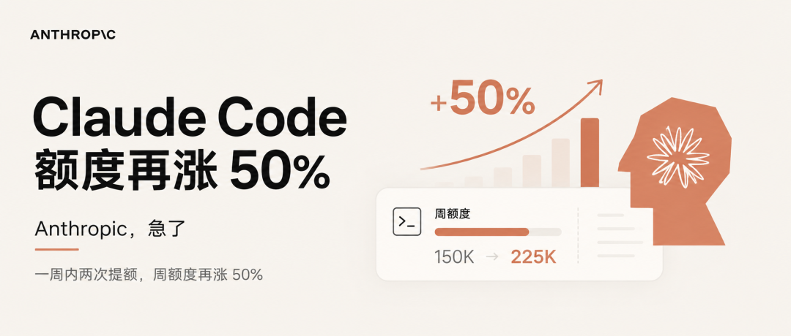

你的 Claude Code，学会通宵加班了。
准确说，是两个更新同时上线。
第一，/goal。你给 Claude 定一个完成目标，它就一轮一轮不停干，直到目标达成。中间不需要你盯着电脑，不需要你回复，也不需要你确认。

第二，Claude Opus 4.7 快速模式上线了。底层模型没变，但 token 输出速度是之前的 2.5 倍。
/goal 让 AI 变身 24/7 牛马，快速模式让 AI 跑得更快。
你写完了代码，现在需要测试。怎么让 Claude Code 自动执行？
在 Claude Code 终端里输入 /goal test/auth 目录下所有测试通过，lint 检查无报错，回车。

Claude 立刻开始干活。运行，发现报错，改 bug，再跑测试。每一轮结束，一个独立的小模型（默认 Haiku）会检查你定的目标是不是达成了。没达成，继续。达成了，弹出「Goal achieved」，收工。

整个过程，你可以去放空，可以去开会，甚至可以直接去睡觉。
屏幕上会显示一个 ◎ /goal active 的状态条，实时更新已经跑了多久、跑了几轮、花了多少 token。
/goal 的底层逻辑是一个「Stop Hook」。
正常情况下 Claude 干完一轮就停了，然后等你下一句指令。/goal 在每轮结束时拦截这个「停止」的动作，调用另一个模型判断目标有没有达成。没达成，就把原因传回去作为下一轮的引导，Claude 继续干。
注意，干活的和验收的，不是同一个模型。干活的是 Opus，验收的是 Haiku。
/goal 不是 Anthropic 凭空想出来的。故事要从一个澳洲放羊大叔说起。
Geoffrey Huntley，住在澳大利亚乡下，平时真的在放羊，住在房车里。2025 年底，他铲完羊粪休息的时候，用五行 bash 脚本解决了一个所有 Claude Code 用户都头疼的问题：「AI 干活干到一半就停了，等你确认，你不回复它就卡在那。」
方法极其简单粗暴。一个无限循环，每次 Claude 停下来，就自动把同一个提示词投喂回去，让它继续。他给这个脚本起名 Ralph Loop，来自《辛普森一家》里那个怎么摔都爬起来的小孩 Ralph Wiggum。

五行代码迅速火遍全网。有网友用它让 Claude 连续运行 11 个小时，自动实现了 54 个功能，执行了 1291 个单元测试。Y Combinator 团队拿它通宵交付了六个生产级代码仓库。Geoffrey Huntley 自己用它写了一门编程语言，API 调用费 297 美元。同样的活如果雇人，至少 5 万美元。
Claude Code 负责人 Boris Cherny 注意到了，先做成官方插件，再纳入产品路线图。从 /loop 到今天的 /goal，一脉相承。
放羊大叔的五行代码，最终变成了官方功能。
/goal 和 Claude Code 里已有的自主运行方式不同。
/loop 是按时间间隔循环执行。你设定每 5 分钟跑一次 /review-pr，它就每 5 分钟跑一次，不管上一轮结果如何。
Stop Hook 是你自己写脚本决定要不要继续。灵活，但需要你懂代码。
/goal 是你给一个终点目标，Claude 自己判断有没有完成。不需要定时，不需要写脚本，一句话就行。

三种方式不冲突，可以组合使用。比如你可以开着自动模式（Shift + Tab）让 Claude 不用每次都问你要权限，同时设一个 /goal，这样它既不需要等你批准工具权限，也不需要等你输入下一轮提示词。完全起飞。
但要注意设定的目标要清晰明了，别翻车了。
有个开发者晚上设了个 /goal 就去睡觉了。第二天早上醒来，6000 美元 Claude 额度没了。
/goal 模式目前没有内置花费上限。目标没达成，它就一直跑。
所以，建议在目标描述里加一句约束，比如「迭代不要超过 20 轮」。或者用 --max-turns 和 --max-budget-usd 参数兜底。
接下来是 Claude Opus 4.7 快速模式。

它是同一个 Opus 4.7，换了一套速度优先的推理配置。模型智商完全一样，纯粹是跑得更快。
快多少？标准 Opus 执行一个复杂重构任务可能要等 30 到 45 秒才开始输出内容，快速模式下 12 到 18 秒就开始输出。速度提升 2.5 倍。
代价是「贵」。
标准 Opus API 定价是输入 5 美元、输出 25 美元每百万 token。快速模式输入 30 美元、输出 150 美元。
整整 6 倍。
划重点，快速模式只走额外用量（extra usage）计费，不算在 Claude 订阅额度里。每一个 token 都需要额外掏钱。

从今天起，Claude Opus 4.7 将成为快速模式的默认模型。
之前是 Opus 4.6。想提前用上 Opus 4.7 快速模式，还得设置变量 CLAUDE_CODE_ENABLE_OPUS_4_7_FAST_MODE=1。
快速模式对 API 用户也开放了，但需要先填表申请。Claude Code 用户只要开了额外用量，现在就能用。
在 Claude Code 里输入 /fast，开启。再输一次，关闭。开启的时候旁边会有一个闪电 ↯ 图标。
快速模式 = 快速烧钱，非刚需不是很建议。
/goal 让 Claude Code 可以自主运行，直到任务完成。快速模式让每一轮都更快。一个解决「需要人盯着」的问题，一个解决「干活太慢」的问题。
配合刚刚上线的 Agent View，你可以在一个终端里启动 5 个 Claude 会话，每个设一个 /goal，全部放到后台。偶尔切过去看看哪个完成了，哪个还在跑。
写代码的不再是你。你负责下指令、定目标、验收结果。
更新 Claude Code，用这个命令就行 claude update。
/goal 需要 v2.1.139 以上。
快速模式需要开通额外用量（extra usage）。
切莫贪杯。
我是木易，Top2 + 美国 Top10 CS 硕，现在是 AI 产品经理。
关注「AI信息Gap」，让 AI 成为你的外挂。
